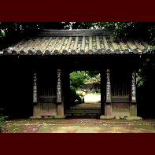

哲学堂公園/東京都中野区

哲学堂公園は現在、中野区立の公園である。しかしそこはとても公営の公園とは思えない、深淵なる哲学の世界をイヤになる程堪能できる明治のニューサイエンスのテーマパークなのである。
この庭園は元々、東洋大学創設者であり妖怪研究家としても有名な井上円了が精神修養道場として創設したものを東京都が譲り受けたものなのだ（その後中野区に移管）。
形としては寺の形式を取りながら（哲学宗本山・道徳山哲学寺とも呼ばれていた）古今東西の思想家へのリスペクトを表現した、大変妙なつくりなのである。
天狗像と幽霊像が両脇に並ぶ哲理門は寺で言えばさしずめ仁王門といったところか。その門をくぐると円了ワールド全開の奇妙な建築群が軒を並べる。
まず目に付くのが外観二層内部三層の「六賢台」と呼ばれる赤い六角塔。聖徳太子、菅原道真、荘子、朱子、そしてインドの龍樹、迦毘羅を奉ってあるという何とも変な塔だ。赤い灯台みたい。竣工は明治37年。
六賢台の左隣には本堂にあたる建物の「四聖堂」が。正面から見ると何の変哲もないお堂だが、なんとこれが四方全部が正面というケッタイなモノ。釈迦、孔子、ソクラテス、カントの四人を奉ったこのお堂、誰が一番偉いのか甲乙付け難いための四方正面造りと思われる。ちなみに堂内の天井中央部には四方を向いてそれぞれ
「釈聖」「孔聖」「瑣聖」「韓聖」と書かれた額が掲げられているそうだ。
で、さらに左に目を移すと「宇宙館」という講堂がある。方形造のこのお堂、なんと向拝（入口）が建物の角に斜めに取り付いている。そして内部にはやはり斜めに、三角形の部屋があり、そこが「皇國殿」という本殿になっているのだ。
その他、吹き抜け空間を持つ図書館の「絶対城」や三角の屋根が架かる三堂亭など境内、もとい園内には珍建築が目白押しなのだ。この珍建築群を設計したのは、山尾新三郎という建築家。明治の建築史から大きく逸脱したアウトサイダーだ。ちなみにこれらの建物の内部は公開されていない。一般公開することを切に願うものである。
ここ哲学堂がさらに変なのは、これらの珍建築群やその他の奇怪なオブジェ（狸の灯籠や筆の形の碑など）、はたまた坂道や林、池や塀にいたるまで、非常に哲学的な、というか常人にはまるで理解できない奇妙なネーミングがなされている点である。そしてさらにそれらのタイトルに御丁寧に区（都か？）がいちいちキャプションを付けてくれているのだが、その説明たるやタイトル以上に解り難い。例えば小道が二つに別れている部分に「二元く（難し過ぎてワープロで出ませんでした）
」と彫られた小さな石柱が建っており、それは創設当時のものなのだが、その隣に立看板がたっており「唯物園と唯心庭の岐路で二元もまた物心二者対立の名称である」との説明が・・・何の事だかわかりますかあ？私にはさっぱり解りません。
一事が万事この調子で77ケ所もある。
ここはまさに岐阜県にある養老天命反転地の明治版といったところである。
ただし養老と違う点はホームレスの方々や野良猫などが園内を闊歩しているところである。なんたって入場無料だもんね。
宇宙館の隣で酒盛りをしていたオッさん達、建物に小便ひっかけちゃダメだよ。なんたって「哲学」なんだから。
珍寺大道場 HOME